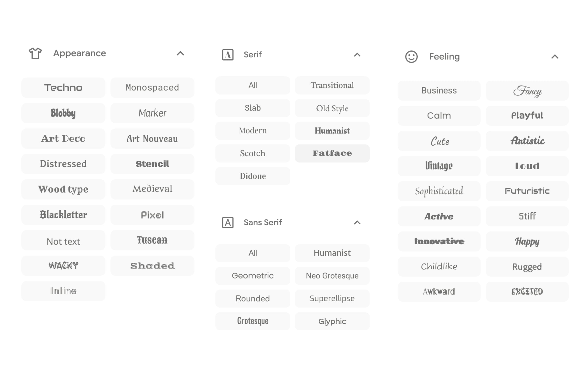

Colors, fonts, sizes & SCSS
You can get very far with theming using only
Cascading Style Sheets (CSS) is a stylesheet language used to describe the presentation of a document written in HTML
CSS is written as a series of pairs; selectors and properties.
selectors specify what elements on a page we want to style.
properties specify what the elements should look like.
.reveal .slide a is the selector. It picks out the links on your slides.
color and text-decoration are the properties. They say what those links look like.
This does nothing. Reveal already has its own rule for links, and it is more specific than yours.
.reveal .slide in front is how you out-specify it. Expect that prefix on most rules you write.
While CSS is very powerful, it can also feel a little too wordy and less expressive. So we use the compiled langauge Sass.
Quarto runs that compiler for you on every render. There is no build step to set up.
Same language, same features. SCSS is the one that looks like CSS, and the one everybody uses.
Quarto expects .scss. That is the only one you need to think about.
Reveal’s own styles are specific, so your rules need .reveal .slide in front to win.
A typo in CSS is silent. The browser drops the line and moves on.
$primry-color fails to compile and tells you the lineYou are not styling one deck. You are building a look you keep.
That is the whole bet: pay the setup cost once, spend the rest of your time on content.
Combine a built-in theme with your sheet, or skip the built-in with theme: styles.scss.
defaults sass variables, read before Quarto builds the themerules plain CSS, applied afterReach for a variable first. Write a rule only when no variable exists.
$presentation-heading-font slide titles$font-family-sans-serif body text$font-family-monospace inline code and code blocks
@import version, not the <link> versionSeeing what other people are doing
Looking up font pairings online
Lots of trial and error
Default fonts are fine too!
$body-bg slide background$body-color body text$presentation-heading-color titles$link-color links, progress bar, menu$code-color inline codehighlight-style controls code blocks, and it does not follow your $body-bg.
$presentation-font-size-root everything scales off this$presentation-h1-font-size / $presentation-h2-font-size$code-block-font-sizestyles.scss
you can go really far with the revealjs sass variables
however it doesn’t cover everything possible that we could want to do
so we will need to write our own SCSS rules
If you can see it on a slide, it has a selector. The browser will tell you what it is.
styles.scssNothing you change in the inspector is saved. It is a scratchpad, not an editor.
Changing the line height of a unordered list
Define a class once, use it on any slide or span.
styles.scss
The [important part]{.highlight} of the sentence.
Same deck, a handful of slide looks. Give a slide a class and style that class.
The plain slide is your base style. A class is what you reach for when you want a different one.
styles.scss
Nesting keeps a variant in one readable block, so adding a second is copy, rename, change the colors.
The classic is xaringan’s inverse: one dark slide among the white ones, used for a section break or a quote.
styles.scss to the preview deck and wire up theme:$presentation-font-size-root until it feels too big, then leave it thereBack to the workshop materials.
Slidecrafting Workshop